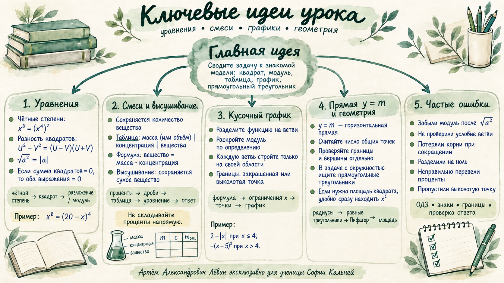

Увидеть квадрат
Чётную степень часто полезно представить квадратом выражения меньшей степени.
София Кальней · 20 сентября 2026 · ОГЭ
Чётные степени и модуль, модели смесей и высушивания, кусочно заданные функции, горизонталь y = m и геометрическая стратегия через прямоугольные треугольники.
Цель: быстро узнавать знакомую математическую модель и выбирать короткий, контролируемый способ решения.

01 · алгебра
Чётную степень часто полезно представить квадратом выражения меньшей степени.
Факторизация снижает степень и разбивает задачу на более простые ветви.
Модуль обязателен, если знак выражения заранее неизвестен.
Разобранный пример
Обе части — чётные степени.
После двух извлечений квадратного корня задача сводится к модулю.
Получить x⁴ = (20 − x)².
Перейти к x² = |20 − x|.
Раскрыть модуль по определению и проверить условия ветвей.
Потерять модуль после √(a²); забыть условие ветви; разделить на выражение, которое может быть нулём; потерять корень при сокращении.
Сумма двух квадратов равна нулю только тогда, когда оба выражения равны нулю одновременно.
02 · текстовые модели
Сохраняется количество растворённого вещества.
Проценты перед вычислением переводите в доли: 26% = 0,26.
Уменьшается вода, а сухое вещество сохраняется.
Сначала определите, какая часть системы остаётся неизменной.
Первый раствор: 5 л, 0,26. Второй: 7 л, 0,44. Общий объём: 12 л.
Количество вещества после смешивания равно сумме его количеств в исходных растворах.
x = 0,365 = 36,5%.
Проверка: итоговая концентрация лежит между 26% и 44%.
03 · графики
Первую ветвь дополнительно раскрываем по знаку x; вторую строим только при x > 4.
Для первой ветви точка (4; −2) включена. Для параболы точка (4; −1) выколота.
Строгое или нестрогое неравенство в условии ветви определяет вид граничной точки.
Разделите функцию на ветви.
Раскройте модуль по определению.
Стройте каждую формулу только на своей области x.
Отдельно отметьте граничные точки.
y = m — горизонтальная прямая. Перемещайте её вверх-вниз и считайте число общих точек со всеми ветвями.
Обязательно проверяйте m = −2, m = −1 и m = 0 отдельно: именно здесь меняется число пересечений из-за включённых/выколотых точек и вершины параболы.
04 · геометрия
Если в задаче есть окружность, начните с центра и радиусов. Здесь радиусы к двум вершинам квадрата создают два прямоугольных треугольника.
Из равенства гипотенуз-радиусов и сторон квадрата получаем равенство треугольников, поэтому центр делит нижнюю сторону квадрата пополам.
Пусть сторона квадрата равна x, радиус равен 4.
Так как искомая площадь — x², сторону отдельно находить не требуется.
05 · Путь А
Что обязательно появляется после извлечения √(A²), если знак A неизвестен?
Отмечено: 0 из 8